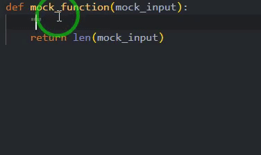

Sphinx documentation
For a short video of sphinx please take a look at Sphinx Intro. By using Sphinx you can easily create documentation using the docstring in the code and other documents in the repository.
demo of the Sphinx
To make a new document do the following:
git clone git@github.com:Nutrien/sphinx_template.git
make docs doc_type=html
You can change html with one of the followings:
html: to make standalone HTML files
dirhtml: to make HTML files named index.html in directories
singlehtml: to make a single large HTML file
pickle: to make pickle files
json: to make JSON files
htmlhelp: to make HTML files and an HTML help project
qthelp: to make HTML files and a qthelp project
devhelp: to make HTML files and a Devhelp project
epub: to make an epub
latex: to make LaTeX files, you can set PAPER=a4 or PAPER=letter
latexpdf: to make LaTeX and PDF files (default pdflatex)
latexpdfja: to make LaTeX files and run them through platex/dvipdfmx
text: to make text files
man: to make manual pages
texinfo: to make Texinfo files
info: to make Texinfo files and run them through makeinfo
gettext: to make PO message catalogs
changes: to make an overview of all changed/added/deprecated items
xml: to make Docutils-native XML files
pseudoxml: to make pseudoxml-XML files for display purposes
linkcheck: to check all external links for integrity
doctest: to run all doctests embedded in the documentation (if enabled)
coverage: to run coverage check of the documentation (if enabled)
Then you can find the doc_type directory under docs/_build
To use Sphinx in a directory use [^1]:
sphinx-quickstart <path to the directory you created>
[^1] for more info about initiating Sphinx visit quick start to Sphinx.
text formatting syntax
Sphinx supports multiple formatting syntax and here we mention two of the most used ones.
reStructuredText
reStructuredText is the default text formatting syntax of Sphinx. It is an easy-to-read, what-you-see-is-what-you-get plaintext markup syntax and parser system, you can use the Restructure text cheat sheet when you want to use this format.
Markdown
in order to use Markdown in your repo make sure to include myst_parser in the docs/conf.py extensions.
extensions = ['myst_parser','other extensions']
You can use Markdown cheat sheet in this case.
sphinx structure
Sphinx main parts are the docs/makefile, docs/conf.py, and docs/index.rst. Which are explained below:
docs/makefile: It is used to build the documentation while calling the make command.docs/conf.py: the configuration of the Sphinx, for more information please visit Sphinx documentation. You can set the theme of your sphinx using:html_theme = "sphinx_rtd_theme"
in this file. Feel free to change the
sphinx_rtd_themewith the theme of your choice.docs/index.The main part is the toctree which is what files to include in the documentation.
API Docstrings
Sphinx can update the documentation using the docstrings in the repository. As an example, two of the best practices are google and Numpy docstring formats in which sphinx.ext.napoleon extension supports it, make sure to add this extension in conf.py2.
extensions=['sphinx.ext.napoleon','other-extensions']
 |
|---|
demonstration of how to generate docstring including the type hints |
In case you are using Pycharm take a look at Pycharm docstring .
GitHub
- 2
Please refer to Numpy napoleon example and Google napoleon example for a template of in code documentation. If you are using VSCode consider installing autoDocstring extension to automatically generate docstring. in order to autogenerate the docstring for your repository. Make sure to use typing before you use autoDocstring in order to automatically generate the input and output information on docstring.